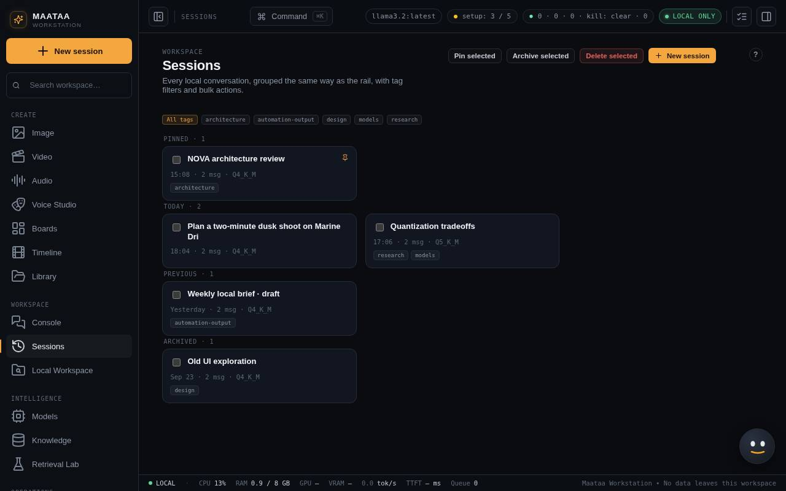

Chat and sessions
Talk to a local model, attach images, cite your documents, make media from chat, and keep conversations organised.

Send a message
- Press New session (or pick one on the left).
- Check the model in the model pill at the top right. Click it to choose another synced model.
- Type in the box at the bottom and press Enter (Shift+Enter adds a line), or hold the microphone and speak. Maataa shows what it is doing step by step above the answer, then the answer streams in. The line under it shows how long the first words took, the speed and the length.
- Press the stop button that replaces send to stop a reply. You can type your next message while Maataa is still answering: it is queued and answered next.
If the selected model is an example record, or Ollama is not running, Maataa says so instead of inventing a reply. Settings > Demo mode allows clearly labelled simulated replies for trying the interface.
Options under the message box
- +: add files, a folder, a web page or a git repository for Maataa to read, or ask it to look at your screen. Images you add are shown to the model; reading them needs a vision model, for example
ollama pull llama3.2-visionorllava. See Add sources, live steps, computer and voice. - Computer: lets Maataa use this Mac in this chat, asking before every action. Voice: reads replies aloud.
- Retrieval: when on, Maataa searches your Knowledge collections for passages that match your message and gives them to the model. Cited passages appear as chips under the answer with their match score.
- Profile (Balanced and your saved profiles): switches temperature, top-p, top-k and repeat penalty in one click. The Inference tab of the inspector shows the exact values.
Make media from chat
Ask in plain words ("make an image of…", "create a video of…", "write a song about…", "compose background music…", "generate a sound effect of…") or start with /image, /video, /song, /music, /sfx or /voice. Maataa answers with a card: Generate runs the job on this computer and shows the result in the chat; Open in Media fills in the right Media tab so you can change settings first. An image attached to the message becomes the starting picture. Songs are written by your local model first, then sung by ACE-Step. See Audio, songs and transcripts.
Fork, snapshot and export
The three buttons at the top of a conversation:
- Fork copies the session so you can try a different direction without losing the original.
- Snapshot saves the session as it is now.
- Export saves the conversation as a file.
Sessions
Sessions lists every conversation. Search, filter by tag, pin the ones you use most, archive old ones and delete what you no longer need. Pinned sessions stay at the top of the Console list. Each row shows the date, number of messages and the model's quantization (for example Q4_K_M).
